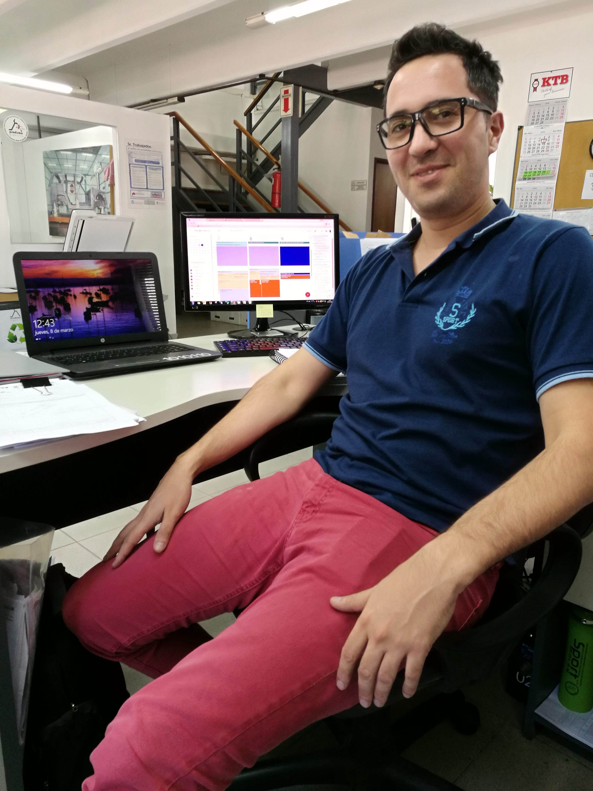

Datos Personales
Mi nombre es Cristian Roldan y como un buen "Milenial" soy un amante de la tecnologia, por ende, necesito estar al tanto de toda tendencia tecnologica existente.
A mi edad de 31 años he pasado por varias carrearas Universitarias que, aunque no haya podido terminarlas, han marcado el camino por el cual estoy caminando y han plasmado, junto a mi Secundario, en donde estoy parado hoy.
Actualmente soy "Comprador" en una empresa dedicada a la construcion de Herramentales para el estampado de autopartes Metalicas y construccion de lineas de ensamblaje de autopartes. Mi hobby es la programacion en computadores, lo hago de manera autodidacta
Mi puesto esta definido por tres características fundamentales, Planificacion al corto y mediano plazo, poder de negociacion, conocimiento tecnico de los procesos de construccion de cada elemento y seguimiento del proceso.
Como buen autodidacta me he puesto en marcha para mejorar estas tareas, aplicando desarrollo web con manejo de bases de datos y aplicaciones desde la nube vamos a convertir la oficina de Compras en la herramienta clave para la competitividad de la empresa en el mundo.
Por lo ya expuesto es que he tomado la decicion de certificar estos conocimientos adquiridos y generar nuevos conocimientos a traves de NEXT U.